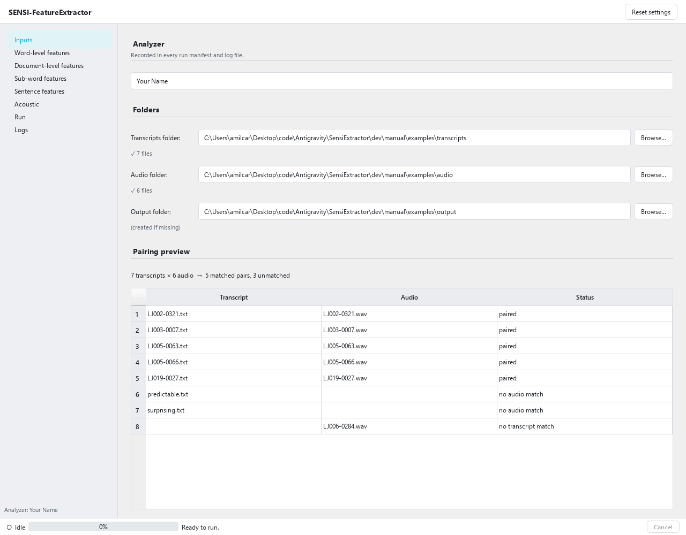
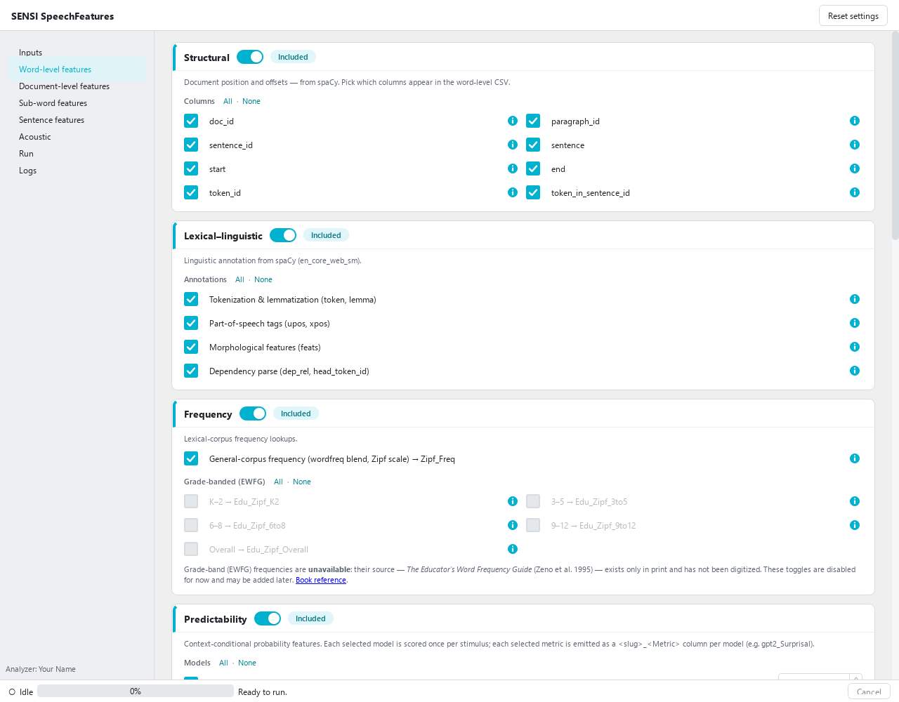
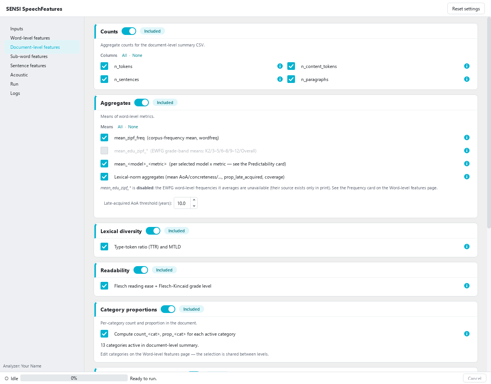
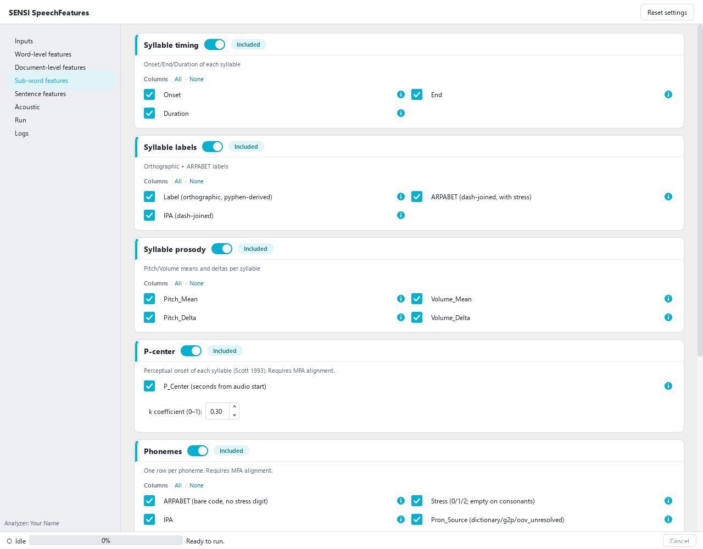
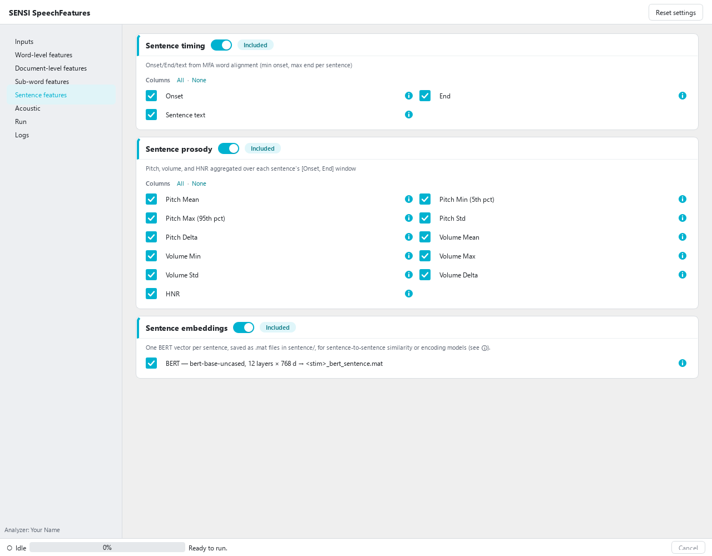
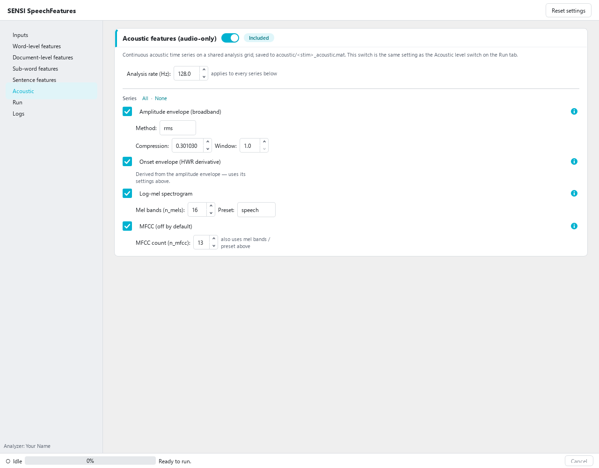
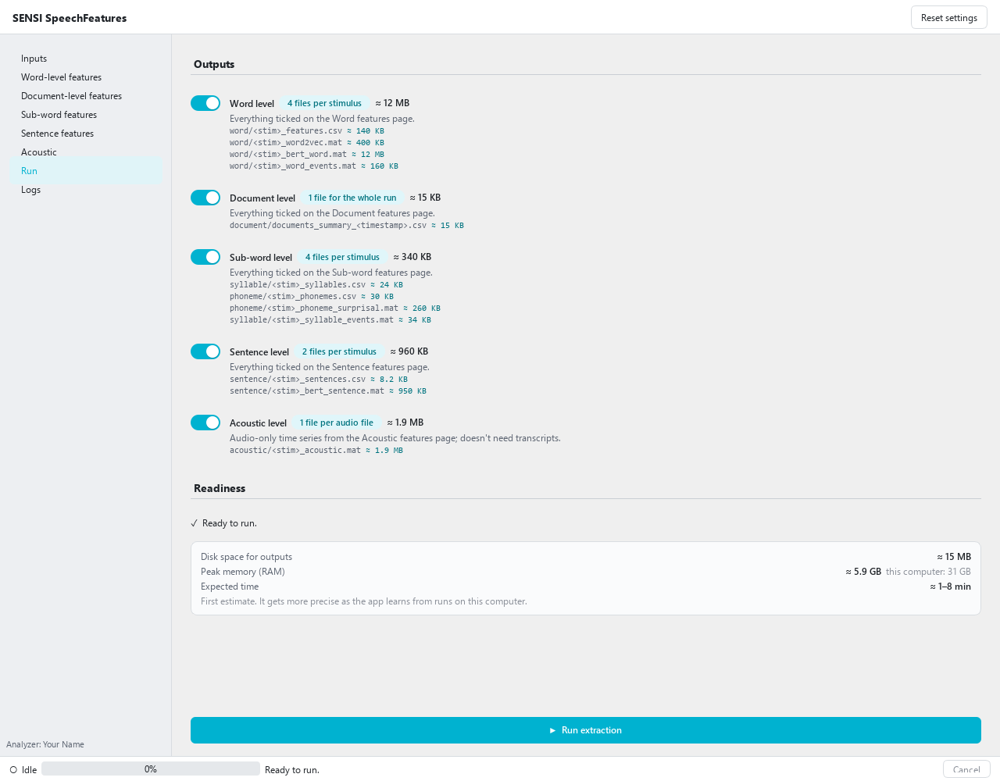
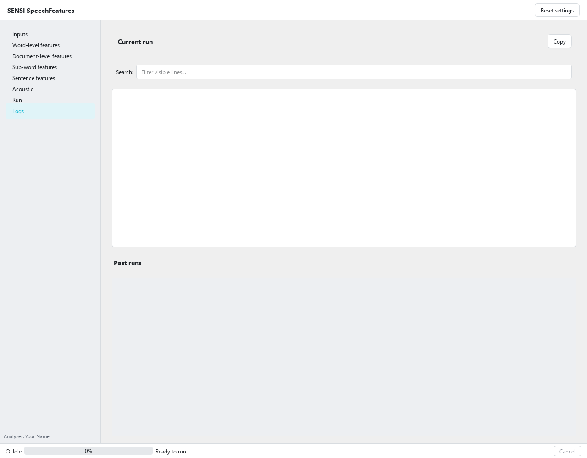

On this page
4Using the app
The app's main sections, the two ways to run it (the app or the run.py script), the HuggingFace token, then each page in turn.
4.1The main sections
The app is one window with eight pages in a sidebar on the left. You go through them top to bottom:
| Page | What you do there |
|---|---|
| Inputs | give your name (recorded with every run) and pick the transcripts, audio and output folders |
| Word-level features | choose the per-word columns: ids, parts of speech, frequency, predictability, embeddings, word prosody… |
| Document-level features | choose the one-row-per-stimulus summary: counts, averages, readability, document prosody… |
| Sub-word features | choose the syllable and phoneme tables |
| Sentence features | choose the per-sentence table |
| Acoustic | choose the audio-only time series (envelope, spectrogram, MFCC) |
| Run | switch on the output levels to write, check the size / memory / time estimates and press Run extraction |
| Logs | watch progress live; reopen past runs |
The bar along the bottom of the window shows whether a run is in progress, how far it has got (file n of N) and a Cancel button.
4.2Two ways to run it
Start the app, set things up on its pages, press Run extraction. Best for choosing features and for small and medium batches. Described in the rest of this chapter.
python run.py runs exactly what the Run button would, with no window. Best for
long batches, servers and Sherlock. See
Headless runs.
Both read the same two plain-text settings files in config/, which the app writes as you
click:
features.yaml— what to extract (every switch, tick and setting on the feature pages). The same on every computer, so you can share it with a colleague or copy it to Sherlock.run.yaml— where: your name, the three folders, the token file. Specific to this computer.
So you can set everything up once in the app and then run it headless, or skip the app and edit the two files directly. Close the app and everything is still there next time.
4.3HuggingFace token
You need a token only to use the Llama language models for predictability (surprisal, cloze, top-match). GPT-2, the default, and every other feature need none. The token proves to HuggingFace (where the model files are downloaded from) that Meta has approved your request to use Llama; you get it once and the app remembers it.
The predictability metrics — Cloze,
Surprisal, and
TopMatch — come from a single forward pass of
each local model you select in the GUI's Predictability card
(roster: GPT-2 + three Llama-3 variants; see
Models). Weights are not bundled; set
access up once per gated model before running. GPT-2 needs no
credentials at all — it's free, ungated, and downloads automatically
on first use. Everything below applies only to the three gated
Llama-3 models.
Why local-only (no OpenAI). Scoring an existing string for per-token log-probabilities needs the OpenAI
/v1/completionsecho=True, logprobsprimitive, which OpenAI does not offer and never served for thegpt-4ofamily. There is no current OpenAI endpoint that returns the probabilities these columns require, so SENSI SpeechFeatures uses local Hugging Face causal LMs only. (Selecting agpt-*model id raises an explanatory error rather than failing mid-run.) There is no API-key input anywhere in the GUI for this feature — only local models are ever offered.
Local Llama backends — gated, free, one-time setup
The Meta-Llama weights are free but gated: HuggingFace releases them only after you accept Meta's license and Meta approves your request.
- Sign in at https://huggingface.co (create a free account if needed).
- Open the model page for the variant you want, e.g. https://huggingface.co/meta-llama/Meta-Llama-3-8B, and fill in the access form to accept Meta's license.
- Wait for approval. Access is granted manually, not instantly — you'll receive a confirmation email and the page will change to show "You have been granted access to this model". This typically takes anywhere from a few minutes to a day or two. Until then, downloads return HTTP 403.
- Create a token. Settings → Access Tokens → New token with the Read role: https://huggingface.co/settings/tokens.
- Provide the token to the run in any one of these ways (all auto-detected):
- Paste it into the HF token box in the GUI's Predictability card, then
click Save to persist it to
config/hf_token.txt(gitignored) and pointshared.hf_token_fileat it — headless runs (python run.py, Sherlock) then pick it up automatically without repasting. Leaving it unsaved keeps the token session-only, for that GUI run alone. The box is shown whenever no token is already detected — you don't need to select a model first; once a token is detected (saved to the configured file, or via one of the fallbacks below) it is replaced by "✓ HuggingFace token detected", or - Run
hf auth loginonce in the environment (stored under~/.cache), or - Set the
HF_TOKEN(orHUGGING_FACE_HUB_TOKEN) environment variable.
- Paste it into the HF token box in the GUI's Predictability card, then
click Save to persist it to
Device placement is automatic, in this order: 4-bit on the GPU (needs a
working bitsandbytes build — an 8B model fits in ~6 GB VRAM this way) →
fp16 on the GPU if bitsandbytes is unavailable (≈16 GB VRAM for 8B; this is the
common path on Windows, where bitsandbytes is often broken) → CPU if there's no
CUDA GPU. If a GPU is present but both GPU loads fail, the run logs a loud
warning and falls back to CPU rather than using the GPU silently — watch the
log for loaded on CPU if inference is unexpectedly slow. Running on
Sherlock/HPC is documented separately.
4.4Inputs

- Analyzer — your name; it is recorded in every run's log and manifest, so you can tell later who produced a set of outputs.
- Transcripts folder — one plain-text file per stimulus (
.txt;.mdand.tsvwork too; numbers are spelled out for you). - Audio folder — the matching recordings (
.wav,.flacor.mp3). A transcript and a recording are paired when they have the same file name (story1.txt↔story1.wav). Optional: without audio you still get every text feature; timing, prosody and the sub-word levels need it. - Output folder — where results go (created if missing).
- Pairing preview — shows which files paired and which didn't, before you run. In the example above, the invented text-only examples have no recording and one recording has no transcript (it is used only by the audio-only Acoustic level).
4.5Feature pages

Each page groups its features in cards — the same grouping as the Features chapters of this manual. On every card:
- The switch next to the title includes or leaves out the whole section. Switched off, the card greys out but keeps your ticks for when you switch it back on.
- The ticks choose individual columns; All · None set them all at once.
- The ⓘ icon opens the feature's explanation — the same text as its page in this manual.
- Some cards have settings (pitch range, pitch units, model choice, analysis rate…); each is explained on the feature's page.
The other feature pages work the same way:




Reset settings (top right) puts every feature choice back to the shipped defaults — a
minimal run with only the structural word columns. It rewrites features.yaml only; your
folders and name in run.yaml are kept.
4.6Run

- Output levels — one switch per level. Each lists the files it will write for every stimulus; a file is crossed out when nothing you ticked would go into it. A level writes only when its switch is on and at least one ticked feature produces that file.
- Estimates — before you start, the page shows the disk space the outputs will take (per level and per file), the peak memory compared with this computer's (with a warning if it may not fit), and an expected time range. The time starts as a wide first estimate and narrows as the app learns how fast this computer is; stimuli that already have a saved alignment in the output folder aren't charged for alignment again.
- Readiness — the run button is enabled only when everything needed is in place; the line above it says what's missing (a folder, a token for a gated model, …).
Alignment runs once per stimulus and is saved in the output folder
(Montreal Forced Alignment/); the next run on unchanged files reuses it.
4.7Logs

Current run shows the progress messages live (with a search box and Copy); Past
runs lists earlier runs in this output folder. Each run also leaves files in
<output>/logs/: the log, a JSON manifest (inputs, settings, versions, per-stimulus results
and any problems), and a table of the units of every column.
4.8Headless runs: run.py
python run.py does exactly what the Run button does, using the saved
config/features.yaml and config/run.yaml. Use it for long batches, on a server, or on
Sherlock.
conda activate ./env
python run.py # uses config/
python run.py --config-dir path/to/other/config
The easiest way to make the two files is to set everything up in the app once. Without the app, copy the templates and edit them:
cp config/features_defaults.yaml config/features.yaml
cp config/run_defaults.yaml config/run.yaml
run.yaml — where
shared:
analyzer_name: '' # required: your name or initials, recorded in the run log
last_transcripts_folder: '' # folder of .txt transcripts (run.py needs it)
last_audio_folder: '' # folder of .wav files; '' = text-only run
last_output_folder: '' # folder the outputs go to (run.py needs it)
theme: system # not used (the app has one light theme)
hf_token_file: hf_token.txt # text file holding your HuggingFace token; a relative path is inside config/
Set analyzer_name and the three folders. Folder paths can be absolute (recommended) or
relative — a relative path is taken from the folder that holds run.yaml.
features.yaml — what
The file has one block per part of the app. The output levels:
output:
level_word: true
level_document: false
level_subword: false
level_sentence: false
level_acoustic: false
# … 18 more keys
Feature switches are true / false under features: (each feature page in this manual
lists the keys it uses). Settings that aren't switches have their own blocks, for example:
prosody:
pitch_units: semitones # semitones | hz
pitch_floor_hz: 75 # Hz, below pitch_ceiling_hz (GUI range 20-400)
pitch_ceiling_hz: 500 # Hz, above pitch_floor_hz (GUI range 100-1200)
pause_threshold_s: 0.25 # seconds, greater than 0 (GUI range 0.05-5)
pcenter_k: 0.3 # 0 to 1
acoustic_ts:
analysis_rate: 128 # Hz, greater than 0 (GUI range 1-2000)
env_method: rms # rms | hilbert
env_comp: 0.3010299956639812 # compression exponent, greater than 0 (GUI range 0.01-2; default log10(2), as in mTRF)
env_window: 1.0 # averaging width in output samples (GUI range 1-16)
n_mels: 16 # whole number, 1 or more (GUI range 1-128)
n_mfcc: 13 # whole number, 1 up to n_mels (GUI range 1-60)
mel_preset: speech # speech | music | general
Predictability is chosen by model and metric:
predictability:
models: [gpt2] # gpt2, or the gated Llama models (llama32_3b, llama3_8b, … — need a token)
metrics:
surprisal: true
cloze: true
topmatch: false
run.py checks both files before doing any work and stops with a plain message for an
unknown key, a wrong type, an out-of-range value (such as a pitch floor above the ceiling) or
a missing folder.